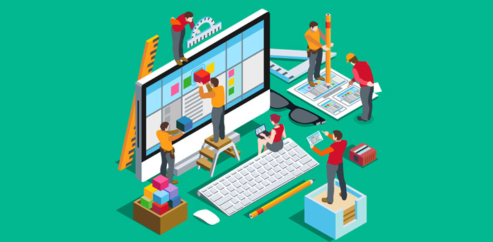
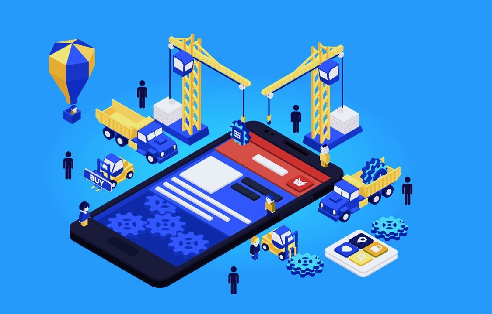

Como lo ideamos
Para empezar a desarrollar una plataforma como la descrita, puedes seguir estos pasos generales para dividir el trabajo: Definir los requisitos: Haz una lista de las funcionalidades clave que deseas incluir en la plataforma. Esto te ayudará a tener una visión clara de lo que necesitas implementar. Diseño de la interfaz de usuario: Trabaja en la creación de los diseños de las diferentes páginas y componentes de la plataforma. Esto implica definir la estructura HTML, los estilos CSS y la disposición de los elementos en cada página.
Desarrollo del frontend: Comienza implementando la parte del frontend de la plataforma utilizando HTML, CSS y JavaScript. Esto incluye la creación de las diferentes páginas, la interacción con el usuario y la validación de formularios. Puedes dividir esta tarea en secciones, asignando a cada desarrollador responsabilidades específicas, como la página de inicio, la página de denuncias, el formulario de reporte de delito, etc.
Diseño de la base de datos: Define la estructura de la base de datos que se utilizará para almacenar la información de las denuncias y otros datos relevantes. Esto puede incluir tablas para usuarios, denuncias, comentarios, etc. Es importante considerar la seguridad y la privacidad al diseñar la base de datos.
Desarrollo del backend: Implementa la lógica del lado del servidor utilizando un lenguaje de programación como Python, PHP, Ruby, etc., junto con un framework web como Django, Laravel, Ruby on Rails, etc. El backend se encargará de manejar las solicitudes del usuario, interactuar con la base de datos y proporcionar los datos necesarios al frontend.
Integración frontend-backend: Asegúrate de que el frontend y el backend se comuniquen correctamente. Define y documenta una API (Interfaz de Programación de Aplicaciones) para que el frontend pueda enviar y recibir datos del backend. Esto incluye el manejo de la autenticación y la autorización, así como el intercambio de datos de las denuncias. Implementación de la seguridad: Asegúrate de incluir medidas de seguridad adecuadas en tu plataforma. Esto puede incluir el almacenamiento seguro de datos, el cifrado de información confidencial, la prevención de ataques de inyección de código, la protección contra ataques de denegación de servicio, entre otros.
Pruebas y depuración: Realiza pruebas exhaustivas para asegurarte de que todas las funcionalidades de la plataforma funcionen correctamente. Realiza pruebas de unidad, pruebas de integración y pruebas de usuario para identificar y corregir cualquier error o problema.  Implementación y despliegue: Una vez que la plataforma ha sido probada y se han solucionado los problemas, está lista para ser implementada en un entorno de producción. Configura un servidor web y una base de datos en un entorno de alojamiento apropiado y realiza el despliegue de la aplicación.
Mantenimiento y actualizaciones: Mantén un ciclo de mantenimiento continuo para asegurarte de que la plataforma esté funcionando correctamente y para implementar actualizaciones y mejoras adicionales a medida que surjan nuevas necesidades. Recuerda que este es solo un esquema general y los pasos pueden variar según tus necesidades y recursos disponibles. También es importante contar con un equipo colaborativo y establecer una comunicación clara entre los miembros del equipo para coordinar el desarrollo de la plataforma.